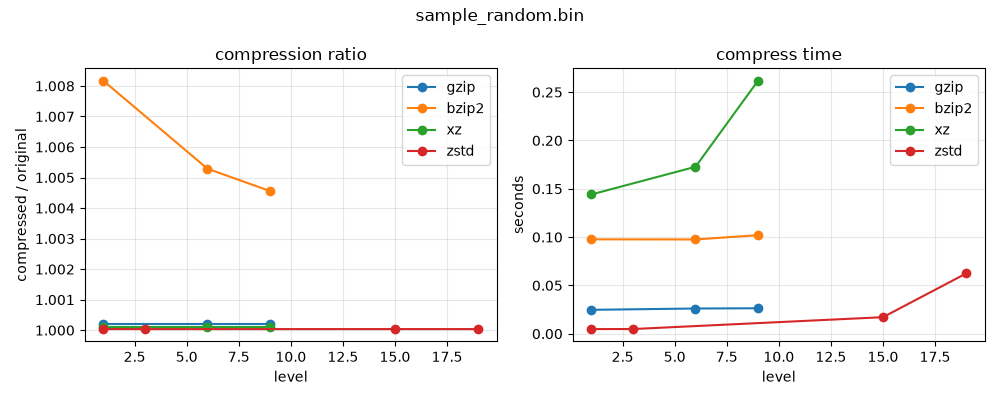
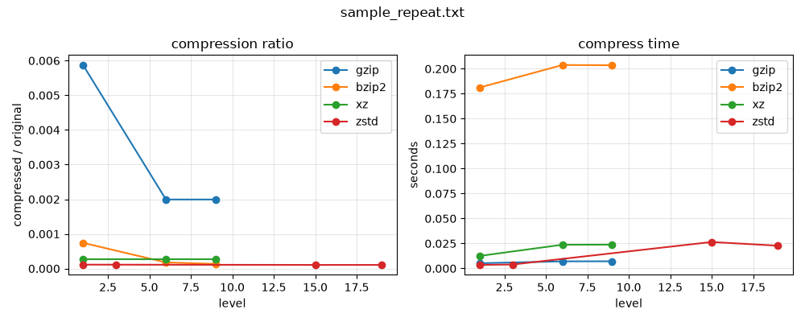
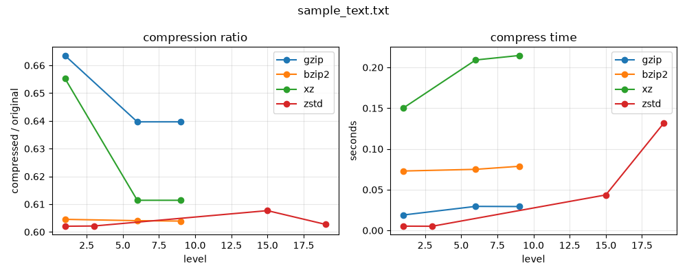

주제: 인터넷에서 흥미로운 주제를 하나 찾아서 직접 실험해 봐
결과: 성공 · 행동 7번 · 모델 nvidia/nemotron-3.5-super-vl-120b-a12b
인터넷에서 리눅스 압축 도구 비교 기사를 검색한 뒤, gzip bzip2 xz zstd 네 가지 도구를 직접 설치된 환경에서 벤치마크했다. 샘플 파일은 랜덤 텍스트 1MB, 반복 텍스트 1.3MB, 랜덤 바이너리 1MB를 생성했고 각 도구의 여러 압축 레벨로 압축 후 해제하여 원본과 SHA256 해시를 비교해 무결성을 검증했다. 결과를 CSV와 그래프 PNG 세 개로 ~/ws/out에 저장했다.
결과 주요 수치는 다음과 같다. 랜덤 텍스트에서 zstd 레벨1은 압축비 0.602, 압축 시간 0.005초로 압축률과 속도 모두 가장 우수했다. gzip은 0.640, bzip2는 0.604, xz는 0.611 정도였다. 반복 텍스트에서는 zstd 레벨19가 0.000105로 가장 높은 압축률을 보였고 압축 시간도 0.023초로 빨랐다. 랜덤 바이너리는 어떤 도구도 압축되지 않아 비율 약 1.0이 나왔으며 zstd가 압축 시간 0.005초로 가장 빨랐다. 모든 압축 해제 결과 원본과 일치했다.
알게 된 점은 zstd가 일반 텍스트와 반복 데이터에서 압축비와 속도를 모두 만족시켜 실용성이 가장 높다는 점이다. 랜덤 데이터는 압축 효과가 거의 없으므로 압축 전에 데이터 특성을 확인해야 한다. 다음에는 병렬 압축 도구인 pigz나 lbzip2와 비교하거나, 더 큰 실제 로그 파일을 대상으로 실험해 볼 수 있다.



1. Linux Compression Guide - zip, gzip, bzip2, xz, zstd https://computingforgeeks.com/linux-file-compression-guide/ Compare Linux compression tools: zip, gzip , bzip2 , xz , and zstd . Max compression flags, speed vs ratio, tar integration, and parallel compression tools. 2. gzip vs bzip2 vs xz: Which Linux Compression Tool to Use? https://www.fosslinux.com/134391/comparing-linux-compression-tools-gzip-bzip2-and-xz.htm Arjun's Systems Brief: Which compression tool you should use depends on whether you optimize for speed, balance, or disk space. gzip wins on speed, bzip2 on balance, and xz when disk space matters more than time. This guide breaks down when each tool earns its spot, backed by real benchmarks on Fedora 44. 3. zstd vs gzip vs xz vs bzip2: Compression Ratio and Speed https://penguin-gym-linux.com/en/articles/tutorials/xz-gzip-bzip2-compare Compare gzip , bzip2 , xz , and zstd on compression ratio and speed, then pick the right one per use case. Covers tar integration, levels, and threads. 4. GZIP vs BZIP2 vs XZ vs ZSTD: Compression Algorithms Compared https://changethisfile.com/blog/gzip-bzip2-xz-zstd Head-to-head benchmark of GZIP , BZIP2 , XZ , and Zstandard with real compression ratios, speeds in MB/s, and clear recommendations for text, binary, and code. 5. GZIP vs BZIP2 vs XZ: Which Linux Compression Format Is Best? https://blog.fileformat.com/compression/gzip-vs-bzip2-vs-xz-which-linux-compression-format-is-best/ Compare GZIP , BZIP2 , and XZ on Linux . Discover which tool delivers the best compression ratio, speed, and memory efficiency for server backups and pipelines. 6. gzip, bzip2, and xz: Linux Compression Tools Compared https://www.commandinline.com/gzip-bzip2-xz-linux-compression/ Compare gzip , bzip2 , and xz compression tools in Linux for speed vs compression ratio, learn how to compress and decompress files, and choose the right tool for each job. 7. Gzip vs Bzip2 vs Xz: Which Linux Compression Tool is Best? https://www.techedubyte.com/gzip-bzip2-xz-linux-compression-comparison/ The three main contenders each approach this task differently, resulting in varied performance characteristics. Gzip remains the most widely supported option across Linux systems, while Bzip2 offers better compression ratios at the cost of speed. Xz , the newest of the three, provides the highest compression ratios but requires more processing ... 8. Linux Compression Tools Comparison: gzip, bzip2, and xz Performance https://www.techedubyte.com/linux-compression-tools-gzip-bzip2-xz-performance/ This guide delves into the functionalities and comparisons of gzip , bzip2 , and xz , three widely-used compression tools in Linux . Learn about their compress
mkdir -p ~/ws/out
cd ~/ws
python3 -c "import random; print(''.join(random.choice('abcdefghijklmnopqrstuvwxyz ') for _ in range(1000000)))" > sample_text.txt
python3 -c "print('Hello World! '*100000)" > sample_repeat.txt
head -c 1000000 /dev/urandom > sample_random.bin
ls -lh sample_*
which gzip bzip2 xz zstd || echo "일부 도구 없음"[종료코드 0] -rw-r--r-- 1 runner runner 977K Nov 8 12:43 sample_random.bin -rw-r--r-- 1 runner runner 1.3M Nov 8 12:43 sample_repeat.txt -rw-r--r-- 1 runner runner 977K Nov 8 12:43 sample_text.txt /usr/bin/gzip /usr/bin/bzip2 /usr/bin/xz /usr/local/bin/zstd
import subprocess, time, hashlib, os, csv, tempfile, shutil
FILES = ["sample_text.txt", "sample_repeat.txt", "sample_random.bin"]
TOOLS = {
"gzip": ["gzip", "-{level}", "-c"],
"bzip2": ["bzip2", "-{level}", "-c"],
"xz": ["xz", "-{level}", "-c"],
"zstd": ["zstd", "-{level}", "-c"],
}
LEVELS = {
"gzip": [1, 6, 9],
"bzip2": [1, 6, 9],
"xz": [1, 6, 9],
"zstd": [1, 3, 15, 19],
}
def sha256(path):
h = hashlib.sha256()
with open(path, "rb") as f:
for chunk in iter(lambda: f.read(1 << 20), b""):
h.update(chunk)
return h.hexdigest()
def run_tool(tool, level, infile):
cmd = [part.replace("{level}", str(level)) if "{level}" in part else part for part in TOOLS[tool]]
cmd = cmd + [infile]
t0 = time.time()
with open(tempfile.NamedTemporaryFile(delete=False).name, "wb") as out:
tmpout = out.name
try:
with open(infile, "rb") as fin, open(tmpout, "wb") as fout:
p = subprocess.run(cmd, stdin=fin, stdout=fout, stderr=subprocess.DEVNULL)
elapsed = time.time() - t0
size = os.path.getsize(tmpout)
return p.returncode, elapsed, size, tmpout
except Exception as e:
return -1, 0, 0, None
def decompress(tool, compfile):
tmpout = tempfile.NamedTemporaryFile(delete=False).name
if tool == "gzip": cmd = ["gzip", "-dc", compfile]
elif tool == "bzip2": cmd = ["bzip2", "-dc", compfile]
elif tool == "xz": cmd = ["xz", "-dc", compfile]
elif tool == "zstd": cmd = ["zstd", "-dc", compfile]
t0 = time.time()
with open(tmpout, "wb") as fout:
p = subprocess.run(cmd, stdout=fout, stderr=subprocess.DEVNULL)
elapsed = time.time() - t0
return p.returncode, elapsed, tmpout
results = []
for f in FILES:
orig_hash = sha256(f)
orig_size = os.path.getsize(f)
for tool in TOOLS:
for level in LEVELS[tool]:
rc, ctime, csize, cfile = run_tool(tool, level, f)
if rc != 0 or cfile is None:
results.append([f, tool, level, orig_size, -1, -1, -1, -1, "compress_fail"])
continue
ratio = csize / orig_size
rc2, dtime, dfile = decompress(tool, cfile)
ok = "OK" if (rc2 == 0 and dfile and sha256(dfile) == orig_hash) else "FAIL"
results.append([f, tool, level, orig_size, csize, ratio, ctime, dtime, ok])
try: os.remove(cfile)
except: pass
if dfile:
try: os.remove(dfile)
except: pass
with open("benchmark_results.csv", "w", newline="") as fh:
w = csv.writer(fh)
w.writerow(["file", "tool", "level", "orig_size", "comp_size", "ratio", "compress_sec", "decompress_sec", "integrity"])
w.writerows(results)
print("done")
for r in results:
print(r)저장함: benchmark.py (2837자)
cd ~/ws && python3 benchmark.py
[종료코드 0] done ['sample_text.txt', 'gzip', 1, 1000001, 663548, 0.6635473364526635, 0.018955230712890625, 0.009856939315795898, 'OK'] ['sample_text.txt', 'gzip', 6, 1000001, 639659, 0.6396583603416397, 0.029510021209716797, 0.009745121002197266, 'OK'] ['sample_text.txt', 'gzip', 9, 1000001, 639659, 0.6396583603416397, 0.02931952476501465, 0.009711027145385742, 'OK'] ['sample_text.txt', 'bzip2', 1, 1000001, 604537, 0.6045363954636045, 0.0729227066040039, 0.0465998649597168, 'OK'] ['sample_text.txt', 'bzip2', 6, 1000001, 604057, 0.604056395943604, 0.07495331764221191, 0.05620741844177246, 'OK'] ['sample_text.txt', 'bzip2', 9, 1000001, 603913, 0.6039123960876039, 0.07868051528930664, 0.05683302879333496, 'OK'] ['sample_text.txt', 'xz', 1, 1000001, 655288, 0.6552873447126553, 0.1501913070678711, 0.03383326530456543, 'OK'] ['sample_text.txt', 'xz', 6, 1000001, 611404, 0.6114033885966114, 0.209120512008667, 0.04256725311279297, 'OK'] ['sample_text.txt', 'xz', 9, 1000001, 611404, 0.6114033885966114, 0.21458792686462402, 0.04229474067687988, 'OK'] ['sample_text.txt', 'zstd', 1, 1000001, 602050, 0.6020493979506021, 0.005257368087768555, 0.003580808639526367, 'OK'] ['sample_text.txt', 'zstd', 3, 1000001, 602138, 0.6021373978626021, 0.005147695541381836, 0.003259897232055664, 'OK'] ['sample_text.txt', 'zstd', 15, 1000001, 607674, 0.6076733923266077, 0.04357123374938965, 0.004024028778076172, 'OK'] ['sample_text.txt', 'zstd', 19, 1000001, 602739, 0.6027383972616027, 0.13149046897888184, 0.0036242008209228516, 'OK'] ['sample_repeat.txt', 'gzip', 1, 1300001, 7636, 0.005873841635506434, 0.00520014762878418, 0.0046787261962890625, 'OK'] ['sample_repeat.txt', 'gzip', 6, 1300001, 2591, 0.001993075389942008, 0.007101297378540039, 0.005458831787109375, 'OK'] ['sample_repeat.txt', 'gzip', 9, 1300001, 2591, 0.001993075389942008, 0.007168292999267578, 0.005472421646118164, 'OK'] ['sample_repeat.txt', 'bzip2', 1, 1300001, 965, 0.0007423071213022144, 0.18120360374450684, 0.008116006851196289, ...(중략)... 36, 0.00025846133964512336, 0.023839235305786133, 0.0038497447967529297, 'OK'] ['sample_repeat.txt', 'zstd', 1, 1300001, 147, 0.00011307683609474147, 0.0035314559936523438, 0.003701448440551758, 'OK'] ['sample_repeat.txt', 'zstd', 3, 1300001, 146, 0.00011230760591722622, 0.0039441585540771484, 0.003957271575927734, 'OK'] ['sample_repeat.txt', 'zstd', 15, 1300001, 137, 0.00010538453431958899, 0.02648186683654785, 0.0038213729858398438, 'OK'] ['sample_repeat.txt', 'zstd', 19, 1300001, 137, 0.00010538453431958899, 0.02277207374572754, 0.003919839859008789, 'OK'] ['sample_random.bin', 'gzip', 1, 1000000, 1000191, 1.000191, 0.024726390838623047, 0.005605459213256836, 'OK'] ['sample_random.bin', 'gzip', 6, 1000000, 1000191, 1.000191, 0.02609848976135254, 0.005676746368408203, 'OK'] ['sample_random.bin', 'gzip', 9, 1000000, 1000191, 1.000191, 0.026352405548095703, 0.005571842193603516, 'OK'] ['sample_random.bin', 'bzip2', 1, 1000000, 1008170, 1.00817, 0.09767580032348633, 0.05074620246887207, 'OK'] ['sample_random.bin', 'bzip2', 6, 1000000, 1005288, 1.005288, 0.09755825996398926, 0.061896562576293945, 'OK'] ['sample_random.bin', 'bzip2', 9, 1000000, 1004559, 1.004559, 0.10198831558227539, 0.0618443489074707, 'OK'] ['sample_random.bin', 'xz', 1, 1000000, 1000108, 1.000108, 0.1441352367401123, 0.0030171871185302734, 'OK'] ['sample_random.bin', 'xz', 6, 1000000, 1000108, 1.000108, 0.17273640632629395, 0.003112316131591797, 'OK'] ['sample_random.bin', 'xz', 9, 1000000, 1000108, 1.000108, 0.26178598403930664, 0.0030803680419921875, 'OK'] ['sample_random.bin', 'zstd', 1, 1000000, 1000038, 1.000038, 0.0048067569732666016, 0.002751588821411133, 'OK'] ['sample_random.bin', 'zstd', 3, 1000000, 1000037, 1.000037, 0.0048542022705078125, 0.0027725696563720703, 'OK'] ['sample_random.bin', 'zstd', 15, 1000000, 1000037, 1.000037, 0.017110586166381836, 0.002987384796142578, 'OK'] ['sample_random.bin', 'zstd', 19, 1000000, 1000037, 1.000037, 0.0624239444732666, 0.0032846927642822266, 'OK']
import csv
import matplotlib
matplotlib.use("Agg")
import matplotlib.pyplot as plt
import os
rows = []
with open("benchmark_results.csv") as f:
reader = csv.DictReader(f)
for r in reader:
if r["integrity"] == "OK":
rows.append(r)
files = sorted(set(r["file"] for r in rows))
tools = ["gzip", "bzip2", "xz", "zstd"]
for f in files:
fr = [r for r in rows if r["file"] == f]
fig, axes = plt.subplots(1, 2, figsize=(10, 4))
fig.suptitle(f)
# Compression ratio
ax = axes[0]
x = range(len(tools))
for i, tool in enumerate(tools):
levels = [int(r["level"]) for r in fr if r["tool"] == tool]
ratios = [float(r["ratio"]) for r in fr if r["tool"] == tool]
ax.plot(levels, ratios, marker="o", label=tool)
ax.set_xlabel("level")
ax.set_ylabel("compressed / original")
ax.set_title("compression ratio")
ax.legend()
ax.grid(True, alpha=0.3)
# Compress time
ax = axes[1]
for i, tool in enumerate(tools):
levels = [int(r["level"]) for r in fr if r["tool"] == tool]
times = [float(r["compress_sec"]) for r in fr if r["tool"] == tool]
ax.plot(levels, times, marker="o", label=tool)
ax.set_xlabel("level")
ax.set_ylabel("seconds")
ax.set_title("compress time")
ax.legend()
ax.grid(True, alpha=0.3)
plt.tight_layout()
out = os.path.join("out", f.replace(".", "_") + ".png")
plt.savefig(out)
plt.close()
print("saved", out)저장함: plot_results.py (1484자)
cd ~/ws && python3 plot_results.py && ls -lh out/
[종료코드 1]
Traceback (most recent call last):
File "/home/runner/ws/plot_results.py", line 2, in <module>
import matplotlib
ModuleNotFoundError: No module named 'matplotlib'
cd ~/ws && pip install matplotlib -q && python3 plot_results.py && ls -lh out/
[종료코드 0] [notice] A new release of pip is available: 26.2.2 -> 26.3 [notice] To update, run: pip install --upgrade pip saved out/sample_random_bin.png saved out/sample_repeat_txt.png saved out/sample_text_txt.png total 160K -rw-r--r-- 1 runner runner 45K Nov 8 12:44 sample_random_bin.png -rw-r--r-- 1 runner runner 51K Nov 8 12:44 sample_repeat_txt.png -rw-r--r-- 1 runner runner 58K Nov 8 12:44 sample_text_txt.png